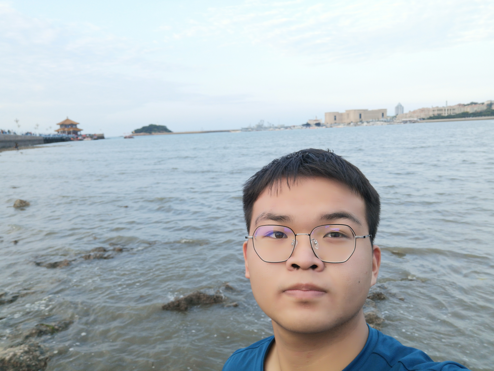

LiDong (李东)
Undergraduate student
CSDN |
Github
Hefei University of Technology (HFUT), China
Email: lidong8421bcd@gmail.com & dongli@mail.hfut.edu.cn
Brief Bio

I received my B.E. degree from Shandong University in 2016, and received my M.E. degree from NUDT in 2018.
Currently, I'm working toward the Ph.D. degree with the College of Electronic Science and Technology, NUDT.
My research interests mainly focus on low-level vision, particularly on
light field imaging and image super-resolution.
News
2022.02 | Our paper "Disentangling Light Fields for Super-Resolution and Disparity Estimation" is accepted by IEEE TPAMI.
2022.01 | We are organizing NTIRE Stereo Image Super-Resolution Challenge at CVPR 2022.
2021.10 | Our paper "Dense Dual-Attention Network for Light Field Image Super-Resolution" is accepted by IEEE TCSVT. [pdf]
2021.10 | Our paper "Spatial-Angular Attention Network for Light Field Reconstruction" is accepted by IEEE TIP.
2021.07 | Our paper "Learning a Single Network for Scale-Arbitrary Super-Resolution" is accepted to ICCV 2021.
2021.04 | Our paper "Symmetric Parallax Attention for Stereo Image Super-Resolution" is accepted as an oral paper to NTIRE 2021.
2021.03 | Our paper "Unsupervised Degradation Representation Learning for Blind Super-Resolution" is accepted to CVPR 2021.
2021.03 | Our paper "Exploring Sparsity in Image Super-Resolution for Efficient Inference" is accepted to CVPR 2021.
2020.11 | Our paper "Light Field Image Super-Resolution Using Deformable Convolution" is accepted by IEEE TIP.
2020.09 | An online tutorial (120 min in Chinese) regarding our Parallax Attention Mechanism is available here.
2020.09 | Our paper "Parallax Attention for Unsupervised Stereo Correspondence Learning" is accepted by IEEE TPAMI.
2020.07 | Our paper "Spatial-Angular Interaction for Light Field Image Super-Resolution" is accepted to ECCV 2020.
2019.12 | Our paper "DeOccNet: Learning to See Through Foreground Occlusions in Light Fields" is accepted to WACV 2020.
2019.03 | A large-scale dataset for stereo image super-resolution is available online at Flickr1024.
2019.02 | Our paper "Learning Parallax Attention for Stereo Image Super-Resolution" is accepted to CVPR 2019.
2022.01 | We are organizing NTIRE Stereo Image Super-Resolution Challenge at CVPR 2022.
2021.10 | Our paper "Dense Dual-Attention Network for Light Field Image Super-Resolution" is accepted by IEEE TCSVT. [pdf]
2021.10 | Our paper "Spatial-Angular Attention Network for Light Field Reconstruction" is accepted by IEEE TIP.
2021.07 | Our paper "Learning a Single Network for Scale-Arbitrary Super-Resolution" is accepted to ICCV 2021.
2021.04 | Our paper "Symmetric Parallax Attention for Stereo Image Super-Resolution" is accepted as an oral paper to NTIRE 2021.
2021.03 | Our paper "Unsupervised Degradation Representation Learning for Blind Super-Resolution" is accepted to CVPR 2021.
2021.03 | Our paper "Exploring Sparsity in Image Super-Resolution for Efficient Inference" is accepted to CVPR 2021.
2020.11 | Our paper "Light Field Image Super-Resolution Using Deformable Convolution" is accepted by IEEE TIP.
2020.09 | An online tutorial (120 min in Chinese) regarding our Parallax Attention Mechanism is available here.
2020.09 | Our paper "Parallax Attention for Unsupervised Stereo Correspondence Learning" is accepted by IEEE TPAMI.
2020.07 | Our paper "Spatial-Angular Interaction for Light Field Image Super-Resolution" is accepted to ECCV 2020.
2019.12 | Our paper "DeOccNet: Learning to See Through Foreground Occlusions in Light Fields" is accepted to WACV 2020.
2019.03 | A large-scale dataset for stereo image super-resolution is available online at Flickr1024.
2019.02 | Our paper "Learning Parallax Attention for Stereo Image Super-Resolution" is accepted to CVPR 2019.
Teaching Assistance
Lecture: Optical Imaging and Detection (Spring Term, 2021)
Lecture: Optical Imaging and Detection (Autumn Term, 2020)
Lecture: Signals and Systems (Spring Term, 2020)
Lecture: Target Detection and Signal Processing (Autumn Term, 2019)
Lecture: Target Detection and Signal Processing (Autumn Term, 2018)
Lecture: Optical Imaging and Detection (Autumn Term, 2020)
Lecture: Signals and Systems (Spring Term, 2020)
Lecture: Target Detection and Signal Processing (Autumn Term, 2019)
Lecture: Target Detection and Signal Processing (Autumn Term, 2018)
Awards & Honors
2021 | Outstanding Master Dissertation Award of Hunan Province
2018 | Guanghua Scholarship
2016 | Excellent Graduates of Shandong Province
2015 | The 1st Prize in the Final of China Mathematics Competitions (45 winners over 63K participants, Top 0.07%)
2015 | National Scholarship (Ministry of Education, Top 2%)
2014 | National Scholarship (Ministry of Education, Top 2%)
2013 | National Scholarship (Ministry of Education, Top 2%)
2018 | Guanghua Scholarship
2016 | Excellent Graduates of Shandong Province
2015 | The 1st Prize in the Final of China Mathematics Competitions (45 winners over 63K participants, Top 0.07%)
2015 | National Scholarship (Ministry of Education, Top 2%)
2014 | National Scholarship (Ministry of Education, Top 2%)
2013 | National Scholarship (Ministry of Education, Top 2%)

Last updated: 2022-2-17